Celebrating Culture Across the Province
Celebrated across the province, this festival gathers various ethnic groups together to showcase their traditions and culture.

Held in Bagumbayan, this festival highlights the town's local arts, crafts, and traditions of its people.
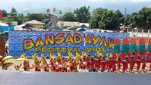
Columbio celebrates Kastifun, a festival full of traditional music, dance, and local heritage.
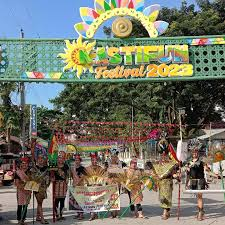
Esperanza's Hinabyog Festival celebrates community unity and showcases local customs and traditions.
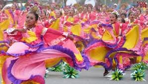
Isulan's Hamungaya Festival features cultural performances, traditional games, and agricultural highlights.
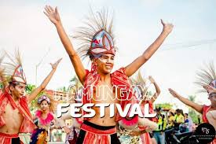
Kalamansig celebrates Salagaan, a vibrant festival showcasing local traditions, marine life, and coastal culture.
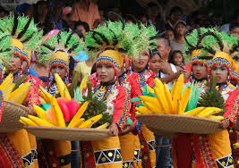
Lambayong's Timpuyog Festival emphasizes community unity and features colorful cultural displays.
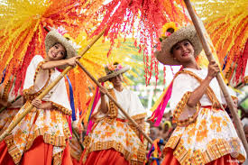
Lebak celebrates Kapeonan with local dances, music, and a showcase of its heritage and traditions.
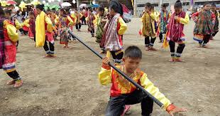
Lutayan's Kanduli Festival celebrates local culture, featuring traditional rituals, food, and music.
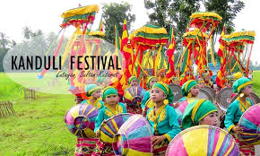
Palimbang hosts Kalilang, a festival highlighting coastal culture, marine resources, and folk traditions.
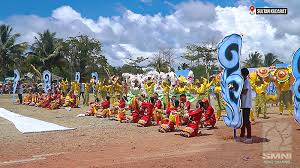
President Quirino celebrates Sambuyawan with performances, rituals, and displays of local art and culture.
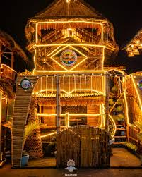
Senator Ninoy Aquino's Sulok Festival celebrates the town's cultural heritage through dance, music, and community activities.
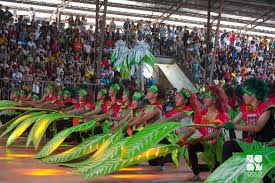
Tacurong City hosts the Talakudong Festival, featuring cultural presentations, street dancing, and local food fairs.
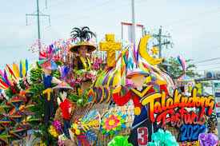